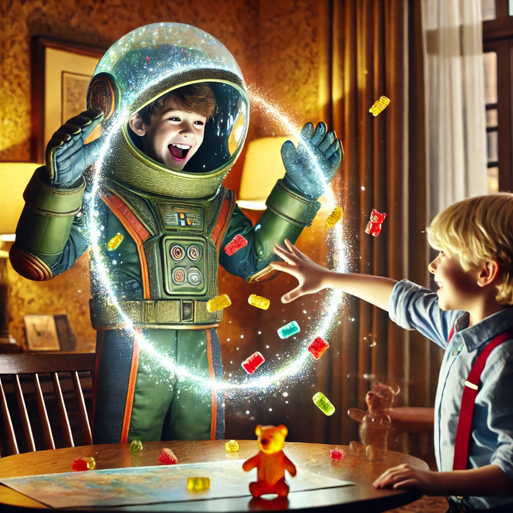

21. Dezember
Die Villa
Die Gruppe erreichte das Hotel, das Carlos auf dem Weg zur Villa gebucht hatte. Es war ein kleines, charmantes Haus am Rande eines Olivenhains. Der Empfang war herzlich, und Johann staunte über das reichhaltige Frühstücksbuffet mit frischem Joghurt, Honig, und duftenden Backwaren. Trotz der bedrohlichen Umstände fühlte er sich für einen Moment wie ein ganz normaler Junge auf Urlaub.
Am Vormittag versammelten sie sich in einem der Hotelzimmer, um die Befreiung von Thea zu planen. Karten und Fotos der Villa lagen auf dem Tisch, und Carlos erklärte die Sicherheitsmaßnahmen und mögliche Schwachstellen. Johann, neugierig wie immer, schlug vor, Maggys Schutzanzug auszuprobieren.
„Lass mich ihn mal anziehen!“ sagte Johann, als Maggy ihm den Anzug reichte. Der Anzug passte ihm wie angegossen. „Okay, Hans, schlag mich!“
„Was?“ Hans hob skeptisch die Augenbrauen.
„Ich will wissen, ob der Anzug wirklich schützt!“ bestand Johann.
Hans seufzte, zog sich seine Jacke aus und gab Johann einen gut gemeinten Schlag auf den Oberarm. Johann schrie auf und sprang zurück.
„Aua! Das tut weh!“ rief er und rieb sich die Schulter.
„Vielleicht hast du etwas übersehen,“ sagte Carlos hinter ihm. Er zeigte auf den Gürtel des Anzugs, an dem mehrere Knöpfe mit Symbolen waren. Johann drückte den Knopf mit dem Schirm-Symbol, und plötzlich baute sich ein schimmerndes Schutzfeld um ihn auf.
Maggy kicherte und warf ein Gummibärchen nach Johann, das an dem Feld abprallte. „Das ist ja genial! Versuch’s noch mal, Hans!“
Hans holte aus und schlug gegen das Schutzfeld. Diesmal prallte seine Faust ab, ohne Johann auch nur im Geringsten zu verletzen.
„Was ist mit den anderen Knöpfen?“ fragte Maggy neugierig.
Johann drückte den Knopf mit dem Augensymbol. Maggy schrie auf.
„Was ist los?“ fragte Johann besorgt und drehte sich zu ihr um.
„Du bist unsichtbar!“ lachte Maggy.
Johann drückte den Knopf erneut, und er wurde wieder sichtbar. „Das ist unglaublich!“
„Probier auch noch den dritten Knopf!“ quietschte Maggy vor Vergnügen. Johann drückte ihn, und das Schutzfeld weitete sich aus. Es umfasste jetzt nicht nur Johann, sondern auch Maggy, Carlos und Hans.
„Fantastisch,“ flüsterte Carlos ehrfürchtig. „Das macht alles viel einfacher.“
Trotzdem war sich die Gruppe einig, dass ein Plan her musste. „Wir gehen einfach alle unter dem Schutzschirm unsichtbar in die Villa, holen Thea und kommen wieder raus. Fertig!“ schlug Johann mit jugendlicher Zuversicht vor.
Carlos lächelte nachsichtig. „Johann, so einfach ist es nicht. Wir müssen mögliche Risiken bedenken. Man kann uns hören, und wir können eingesperrt werden. Wände durchdringen kann das Schutzfeld nicht.“
Hans schlug vor: „Maggy und ich bleiben draußen und halten Kontakt zu euch. Wenn etwas schiefgeht, können wir von außen Hilfe holen.“
Die Gruppe beschloss, dass dies der beste Plan war. Carlos und Hans tauschten Walkie-Talkies aus, und die Vorbereitungen wurden abgeschlossen.
An der Villa
Als sie am Abend an der Villa ankamen, war die Spannung greifbar. Die Wachablösung war in vollem Gange. Carlos und Johann nutzten den Moment und huschten, unsichtbar und unter dem Schutzschirm, dicht hinter der abgelösten Wache durch die Tür. Es war knapp, aber sie schafften es.
Drinnen war die Villa still, abgesehen von einem leisen Summen der Kameras. Sie schlichen eine breite Treppe hinauf, denn Carlos vermutete, dass Thea im Obergeschoss festgehalten wurde. Der lange, enge Flur, der sich ihnen bot, war menschenleer. Doch Johann überlegte nervös, was passieren würde, wenn jemand ihnen entgegenkäme. Das Schutzfeld ließ keine Bewegungen hindurch.
In der Mitte des Flurs entdeckten sie eine Tür mit einem Vorhängeschloss. Carlos flüsterte: „Thea?“
Eine leise, ängstliche, aber hoffnungsvolle Stimme antwortete: „Carlos?“
„Psst, sei leise!“ ermahnte Carlos sie.
Thea kam näher zur Tür. Durch das Schlüsselloch flüsterten sie miteinander.
„Weißt du die Kombination?“ fragte Carlos.
„Nein,“ sagte Thea. „Aber ich habe die Männer, die mir Essen brachten, über die Zahlen reden hören. Einer sagte, es sei der Tag und Monat, an dem sein Großvater Geburtstag hatte. Ein anderer erwähnte, dass er Palindrome liebt. Und einer meinte, die Zahl erinnere ihn an das Märchenbuch seiner Tochter. Der vierte sagte, sie sei im Binärsystem eine '9'.“
Carlos war ratlos. Johann grübelte. Man konnte vier Ziffern einstellen. Ein Palindrom ist eine Zahl, die von hinten wie von vorne gleich war, also zum Beispiel die 5665, und im Binärsystem gab es nur die Ziffern 0 und 1. So wie man bei normalen zahlen eine Ziffer mit 10 multiplizierte, wenn sie eine Stelle nach vorne rueckte, so multiplizierte man sie im binaeren System mit 2. Also, eine 11 ist ja 1 + 1*10.. und eine binaere 11 waere dann 1 + 1*2, die binaere 110 waere 0+1*2+1*2*2.
Welche Nummer oeffnet das Schloss?